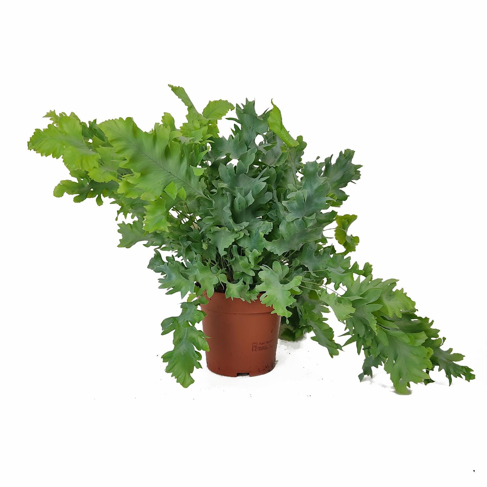

Jeśli marzysz o domowej dżungli, wybierz rośliny doniczkowe, które są bezpieczne dla kota, a do tego łatwe w utrzymaniu takie jak:
https://www.hydroponika.pl/product-pol-3538-Kencja-Kentia-howea-forsteriana-120-cm-MK18-19-6pp.html
https://kwiatydonice.pl/paproc-phlebodium-davana-30cm-p-32709.html